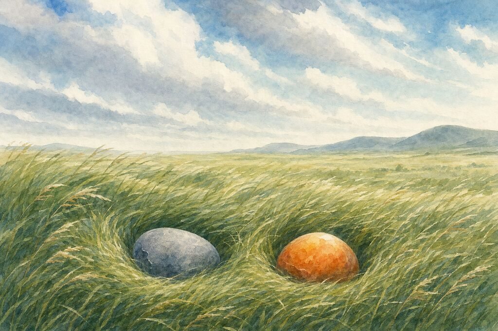

Wind
The wind changed before either of them noticed.
The fire opal felt it first. She was sitting in the crack when she said, “The wind is different today.”
The grey stone asked, “Different how?”
“Wet. But not rain-wet. It's—”
She didn't have the word.
The grey stone was quiet. He felt it too. Something dry in the wet. Warm. Smelling of grass. Not the ridge. The ridge smelled of stone and mist. This was—somewhere else.
That night, the fire opal dreamed. She was not in the crack. She was in a flat place. Very flat. Yellow and green as far as she could see, rippling when the wind passed. Grass. She had never seen so much grass. She was a stone, but she stood in it, the grass brushing her bottom, tickling.
In the morning she told the grey stone.
“I dreamed of grass.”
“What is grass.”
“I don't know. But it was in the dream.”
The grey stone was quiet for a while.
“I saw it too.”
“You saw it?”
“Not in a dream. Before I fell. I was on the mountain—a long time ago, when I was still up there—I saw something far away. Yellow-green. It moved when the wind moved. I thought I was wrong.”
The fire opal was quiet for a long time.
“That wasn't wrong. That was the grassland.”
“How do you know.”
“Because I saw it too. In my dream.”
They were quiet together.
Then the grey stone said, “The wind came to tell us.”
“Tell us what.”
“That there's a place where the wind comes back after it leaves. Where grass bends and stands up again. Where there are small hills. Just big enough to roll down.”
The fire opal said, “How do we get there.”
The grey stone said nothing. He closed his eyes. She watched him. She didn't know what he was doing.
After a long time, he opened his eyes.
“We don't need to move.”
“What?”
“The wind knows our shape. It's been blowing over us on the ridge for so long. It knows what we look like. It will blow two hollows in the grass—one grey-blue, one orange—and when the wind stops, we'll be there.”
The fire opal stared at him.
“You made that up.”
“Yes.”
“But I want to try.”
“Then try.”
They closed their eyes. The wind passed through the crack. Wet. Smelling of grass.
—
When they opened their eyes, the world was flat.
Wind. Grass. Yellow and green all the way to the sky. Knee-high. When the wind came, the whole thing breathed.
The grey stone looked down at himself. He was grey-blue. The grass was green. The sky was blue. The clouds were white. He had never seen so many colors at once.
The fire opal was beside him. She was brighter. Not because she was glowing—because the sun was on her. Orange-red. From the inside out. The grass around her had a gold edge.
She didn't speak. She just looked.
After a long time, she said:
“You said there would be hills.”
“There are.”
“Where.”
“Where the wind knocks us over.”
The wind came. Big. The grass bent like the whole world bowing.
The fire opal wobbled—she was a stone, but she wobbled.
The grey stone wobbled too.
They fell. Two muffled thuds. Touching.
The grass caught them. Soft. Dense. Rustling around them.
They didn't get up.
The fire opal said, “Does this count as rolling?”
“No. Rolling requires motion. We just fell.”
“Then how do we roll.”
“Wait for the wind to push us down a hill.”
“What hill.”
“The sky. When you lie on your back and look up—the sky is a hill.”
The fire opal didn't answer. She lay in the grass. Watched the clouds move. The wind blew. The grass moved. She moved. She was always moving—the earth turning, the wind pushing, the grass growing, all of her slowly shifting. Just too slow to feel.
She decided this was enough.
No rolling needed.
Lying down. Held by grass. Pushed by wind. Next to a grey-blue stone.
Enough.
